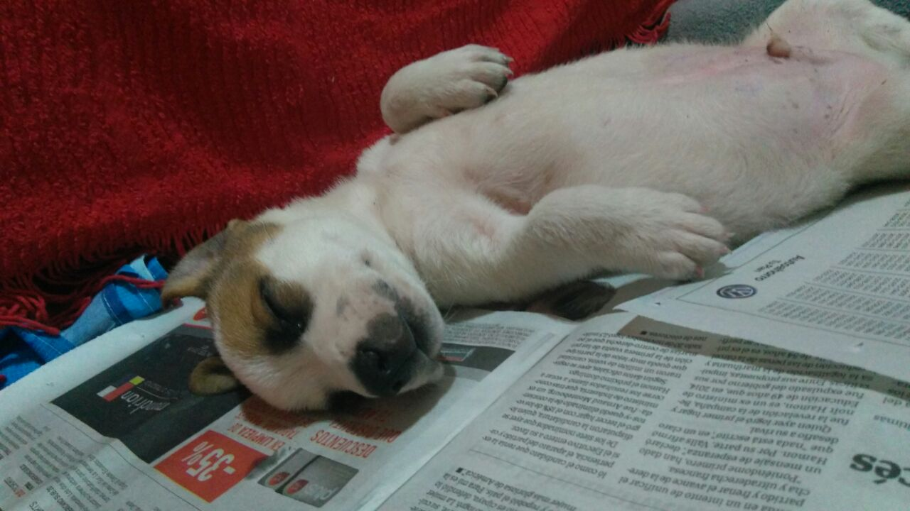

La historia de osito
Esta es una página sobre perros dedicado a Osito, un perro rescatado que nació el 28 de diciembre de 2016, luego de transcurridos 3 meses lo recibimos cuando ya estaba estabilizado. Osito llego lleno de felicidad y alegría. Un perro que amaba morder cosas, corretear y sobre todo dormir largas siestas
El primer día
Osito llego con mucha energía, inmediatamente se puso a correr y a jugar por toda la casa. Jugo con nosotros, jugo con Toby, un caniche que ya estaba previamente con nosotros. También comió toda su comida, y tomó agua para recargar energías y seguir jugando y explorando su nuevo hogar. Para terminar el día durmiendo comodo en su colchoncito, esperando tener nuevas experinecias divertidas al día siguiente
Conociendo el pasto
Llego el gran día de conocer el pasto y poder correr libremente. Ya con todas las vacunas necesarias para evitar cualquier tipo de enfermedad. Osito conoció el patio y el pasto. Con un poco de miedo y con pasos desconfiados fue caminando por el patio. El agua del rocio mojaba sus patitas por lo que saltaba y correteaba por todo el lugar. Toby se sumo a la fiesta y se puso a correr y jugar con él
Con cara de desconfianza por sentir una nueva sensación en las patitas. Esa noche nuevamente Osito termino desplomado durmiendo tranquilo y feliz
Primer baño
Llegó la hora de recibir ¡El primer baño! A osito le encanta el agua y jugar con ella, pero distinto es cuando hay que bañarse. El agua tibiecita para que sea mas lindo, pero se resistía al baño. Después de algunos parates para recibir mimos y caricias, volvió al baño.
Cuando nos descuidamos probo el jab√≥n y parece que le gust√≥ por que despu√©s nos lo robaba y se lo teniamos que esconder. Una nueva comida favorita aunque no muy sana üê∂
Lectura y a dormir
Un día nos encontramos con la imagen de abajo. Fuentes muy confiables nos dicen que Osito estaba leyendo el diario sobre todo su parte favorita la de ofertas, pero viendo la situación del pais y la suba del precio del alimento fingió un desmayo
Probando el dulce de leche
Luego de que la familia comiera panqueques, Osito recibió el pote de dulce de leche vacío para que pueda jugar y tambien probar los restos de dulce de leche de las paredes del pote. A juzgar por sus ganas le gusto... Y MUCHO!
Tomando sol
Las actividades favoritas son jugar, correr y DORMIR. Este fue un dia fresco de primavera, Osito corrió por todo el patio con su pelota. Y cuando terminó de jugar aprovechó el calor del sol para tomarse una bien merecida siesta
Tarde de futbol
En la imagen a continuación nos encontramos a Osito esperando a los rivales para jugar un partido de futbol. Con la mirada fija en los contrincantes para demostrar rudeza. Y siempre con la pelota en los pies

Verano intenso
Vuelven los dias calurosos de verano y Osito ya lo siente en su cuerpo. Ya corretear y jugar en el patio es mucho esfuerzo. Asi que Osito prefiere estar tirado con toda la panza en el piso fresco. Adentro de la casa, cerca del agua y lejos del sol

Conociendo a su novia
Hoy nos visitó Luli, una perra también rescatada de la calle. Osito y Luli jugaron y corretearon por todo el parque. Primero Osito la corría a ella, para después intercambiar los roles. Se entendieron muy bien y disfrutaron un hermoso día. Ya a la tardecita y los dos cansados, se acostaron a descansar en el piso dejandonos con esta hermosa imagen
¡No me gusta ir al veterinario!
Llego la hora de una revisión completa, junto con una cortada de uñas! La veterinaria super dulce y tierna. Y Osito si bien estaba desconfiado, se comenzó a relajar. Tuvimos que ponerle el bozal para cortarle las uñas, como no le gusta que le toquen las patas se defiende y menos si tienen un alicate cerca. No creemos que llegaría a morder a nadie por que Osito es muy bueno, pero es preferible prevenir que curar